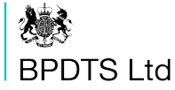

N a t a l i e C l a m p
Designer and developer
Biologist turned coder. Currently fuelling my crafting and outdoor hobbies by designing and building stuff, and teaching folks to do the same.
Experience
- 
-

-
"Nat’s strength lies in the fact that she has a consummate technical knowledge paired with a solid grasp of user-centred design principles. She is a key member of her community of practice who is passionate about sharing knowledge and skills with other people in the team."
-- Tom Rooker, Content designer -

-
"Natalie is a shining example of what a good developer should be."
-- Dan Boscaro, Lead developer -
"Natalie is a shining example of what a good developer should be."
-- Dan Boscaro, Lead developer -
-
"Nat engages well with the team, and has brought a great sense of fun, making the working environment better as a result."
-- Alan Helps, Senior Business Analyst
Selected projects
-
Social news app
Tech: React, Express, SQL
NFC-News is a social news application, much like Reddit, that I built as my solo project whilst studying at Northcoders. This is the first fullstack application I ever built! It displays articles and associated comments, each with their own user-rating. All articles are separated into topics. Frontend and backend source code.
-
Weather data visualisations
Tech: React, React-Chart-JS
A small and simple weather app built within a short sprint whilst studying at Northcoders. It makes asynchronous calls to the OpenWeather API to get temperature and precipitation predictions for cities around the UK over the next few days. See the source code.
Education
-
Developer Pathway
Northcoders
I gained a solid understanding of JavaScript and various popular technologies such as Express and React during my time studying at Northcoders. Completed short single-sprint projects using test-driven development and pair-programming as well as a solo project and group project.
-
MBiolSci Biology
Dept. Animal & Plant Sciences, The University of Sheffield
I achieved a first class undergraduate masters degree in Biology, studying the origins of agriculture in my fourth year in the Osborne lab group. I conducted lab and fieldwork, as well as a term teaching science at a local primary school.
Speaking
-
WomenInDigi19
Coding Mythbusters
June 2019
-
Northcoders Lightning Talks
A11y: what and why?
January 2019
-
Kew Science: Director's Talks
Plants of the World Online: Where are we now?
August 2018